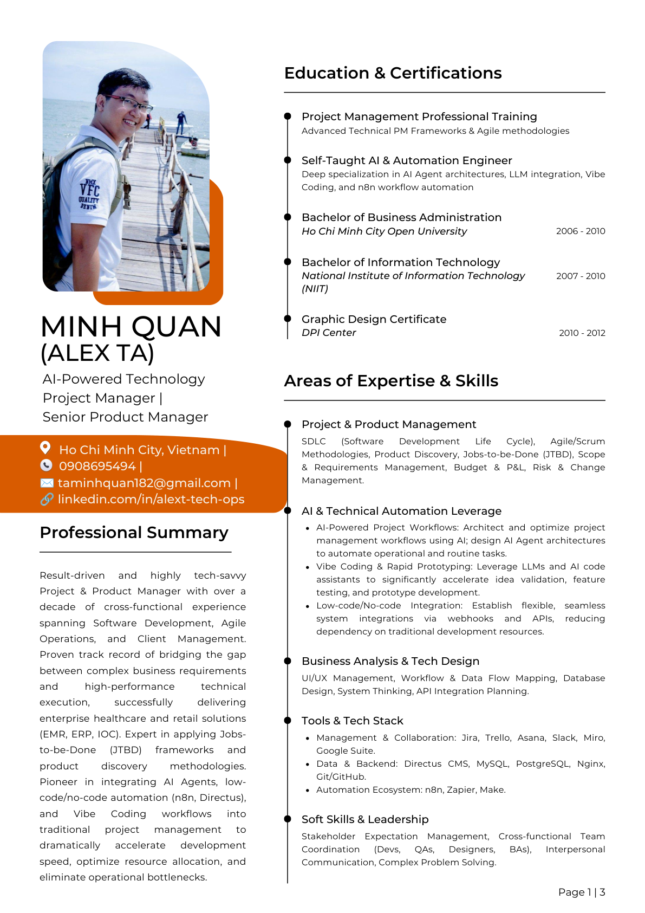

Project & Product Leadership
SDLC planning, Agile and Scrum execution, product discovery, JTBD framing, scope control, budgeting, and delivery governance.
Project leadership, product thinking, and AI automation leverage
Over a decade of cross-functional experience spanning software delivery, product discovery, client management, operational systems, and AI-assisted workflows. Strongest when bridging business complexity with practical technical execution.

Professional Summary
Minh Quan combines product thinking, execution discipline, and systems intuition. He has managed enterprise healthcare deployments, AI-assisted internal tools, ERP workflows, serviced-apartment operations, and client-facing design delivery across both local and international contexts.
The throughline is practical orchestration: clarifying requirements, shaping workflows, aligning teams, removing blockers, and using modern AI tooling to shorten cycles without losing judgment.
Core Strengths
SDLC planning, Agile and Scrum execution, product discovery, JTBD framing, scope control, budgeting, and delivery governance.
AI agents, n8n workflows, LLM-assisted prototyping, low-code integration, webhook architecture, and operational automation.
Workflow mapping, data-flow thinking, database-oriented planning, UI/UX coordination, and API integration planning.
Strong stakeholder management across developers, QA, designers, BAs, vendors, clients, and operating teams.
Selected Impact
Delivered EMR, IOC, and hospital kiosk systems for major medical institutions, including patient-flow automation and digital payment integration.
Built and deployed tailored data systems using Directus, MySQL, and PostgreSQL to digitalize sales pipelines, operations, and internal coordination.
Designed AI-powered knowledge management and automation flows with n8n, AI agents, and rapid prototyping methods to reduce operational drag.
Co-founded and operated serviced-apartment businesses, standardized workflows, optimized occupancy, and maintained long-running operational performance.
Experience Timeline
Led project governance, product discovery, and execution tracking for healthcare-oriented enterprise software delivery, including EMR, IOC, and smart kiosk systems.
Built custom ERP, internal CMS, AI knowledge systems, and technology-driven workflow solutions for businesses and personal operating systems.
Managed property operations, vendor coordination, renovation programs, occupancy performance, and workflow automation for serviced-apartment businesses.
Worked across client-side project management, UX-oriented product work, and education operations, serving clients such as L'Oréal, GSK, HTC, Lenovo, and Zalo.
Education & Certifications
Tools & Platforms
Downloads
Use the English version for international applications, product leadership roles, and cross-border communication.
Use the Vietnamese version for local roles, stakeholder conversations, and contexts where native-language clarity matters.